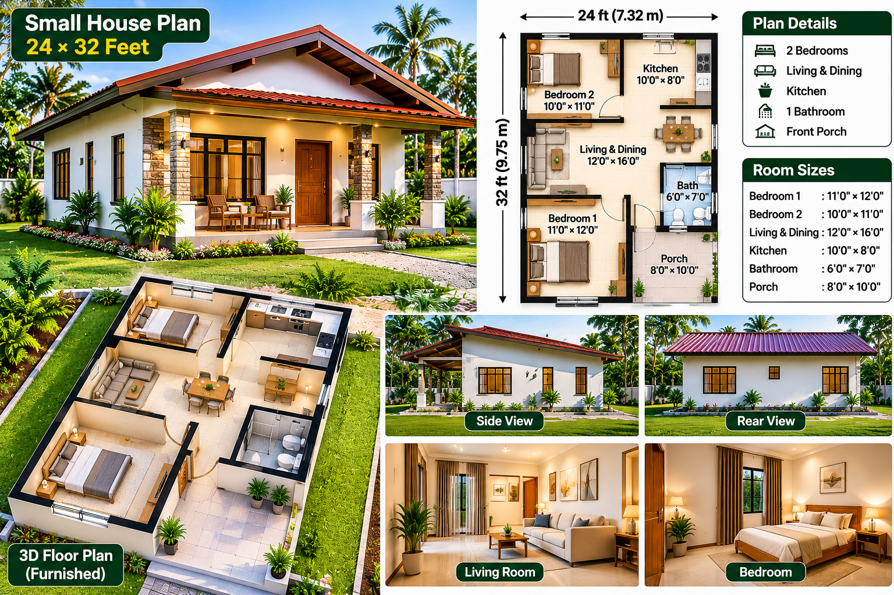

SMALL HOUSE PLANS · ARTICLE 04
24 × 32-Foot Two-Bedroom Small House Plan with Front Porch
A compact single-storey home concept with two bedrooms, an open living and dining space, a separate kitchen and a covered entrance porch.
Plan review: the supplied design image is an illustrative concept board. Its labels are useful as a starting brief, but the room dimensions and drawn geometry need coordination before the plan can be treated as a measured layout.

1. Overview of the 24 × 32-Foot Concept
This concept is arranged as a single-storey, two-bedroom home with a covered front porch. The illustrated arrangement places Bedroom 2 toward the rear-left side, the kitchen toward the rear-right, the shared living and dining zone in the middle, Bedroom 1 toward the front-left, and the bathroom beside the front porch on the right. This zoning can provide a simple separation between sleeping spaces and the shared family area if the circulation is refined.
The stated outside dimensions produce a gross rectangular footprint of 768 square feet (24 × 32). That figure should not automatically be described as the usable indoor floor area. The porch, external and internal wall thicknesses, service spaces and any covered projections must be measured separately on the final drawing.
2. Room Schedule Shown in the Image
| Space | Image label | Area from label | Review note |
|---|---|---|---|
| Bedroom 1 | 11 × 12 ft | 132 sq ft | Check wardrobe and door clearance |
| Bedroom 2 | 10 × 11 ft | 110 sq ft | Check bed access and window location |
| Living & Dining | 12 × 16 ft | 192 sq ft | Boundary is not dimensioned clearly in the image |
| Kitchen | 10 × 8 ft | 80 sq ft | Confirm counter, appliance and aisle clearances |
| Bathroom | 6 × 7 ft | 42 sq ft | Confirm shower, toilet and basin arrangement |
| Front porch | 8 × 10 ft | 80 sq ft | Confirm whether included in the overall footprint |
The listed room areas total 636 square feet when the porch is included. This arithmetic alone does not prove that the layout fits: wall thicknesses, circulation and the exact relationship between the porch and enclosed rooms still need to be drawn and dimensioned. The designer should state clearly whether 24 × 32 feet is measured to the outside face of the walls and whether the porch is inside that rectangle.
3. Bedroom 1 – Main Bedroom
The image proposes an 11 × 12-foot main bedroom. A double bed, two compact bedside tables and a wardrobe may be possible, depending on the actual door and window positions. Keep a usable route from the entrance to both sides of the bed where the furniture arrangement allows. Check that wardrobe shutters and the bedroom door do not collide.
Before fixing the room size, mark the bed footprint, wardrobe depth, bedside furniture and door swing on the measured plan. A room can appear spacious in a rendered image while having tight clearances in real use.
4. Bedroom 2 – Flexible Second Room
The image labels Bedroom 2 as 10 × 11 feet. This could work as a child's bedroom, guest room or compact home office with a sleeping area. The illustrated bed position leaves a wall for storage, but the final arrangement should be tested with the selected bed size and wardrobe. Provide an appropriately sized external window for daylight and natural ventilation where the site layout permits.
5. Living and Dining Area
The 12 × 16-foot label suggests a combined family and dining space. The image shows a sofa grouping and a dining table within one open zone. Keep a clear route from the front entrance to the kitchen and bedroom passage. Do not allow dining chairs, coffee tables or sofa corners to narrow the main circulation path.
Dimension check: The drawing does not clearly mark the full 12 × 16-foot boundary for this room. The designer must identify the exact wall-to-wall measurement and confirm whether the dining area shares open floor space with the kitchen circulation.
6. Separate Kitchen
The proposed kitchen is labelled 10 × 8 feet. A compact counter layout may fit, but the final design should show the refrigerator, sink, preparation surface, cooktop, storage and door or opening locations. Keep sufficient working space in front of appliances and avoid placing the cooking area where it blocks the route through the house. Provide an appropriate window or mechanical extraction for heat, smoke and moisture.
7. Bathroom and Plumbing Zone
The bathroom is labelled 6 × 7 feet and appears beside the front porch. The illustration does not clearly establish the exact shower enclosure, fixture clearances or the door's final opening direction. A revised drawing should show the toilet, washbasin and shower separately, together with waterproofing extents, floor falls, ventilation and access for maintenance.
Locating the bathroom near the kitchen can sometimes simplify plumbing runs, but the actual pipe routes, drainage levels and privacy must be checked. Do not route waste pipes through structural members without an approved detail.
8. Porch, Entrance and Circulation
The front porch is labelled 8 × 10 feet and provides a sheltered arrival space. Confirm whether this porch is fully within the 24 × 32-foot footprint or projects beyond it. The main entrance should open into a clear internal space, not directly into a door conflict or a narrow pinch point.
- Check the main entrance door swing against the bathroom and bedroom doors.
- Make sure the route from the porch to the living area remains unobstructed.
- Confirm that bedroom doors do not open into furniture or block the main passage.
- Show actual door widths and window sizes on the construction drawing.
9. Windows, Daylight and Cross-Ventilation
The concept shows windows on several external walls. The final design should identify each opening with its width, height, sill level and opening type. Position windows to provide useful daylight and cross-ventilation while considering neighbouring buildings, privacy, rain exposure and the direction of prevailing breezes. Bathroom and kitchen ventilation need particular attention.
10. Furnished 3D Layout and Interior Style
The supplied board includes a furnished top view and interior inspiration for the living room and bedroom. Use these images to discuss the intended furniture style and general atmosphere, but base all furniture positions on the corrected 2D drawing. The living room uses a compact sofa arrangement and a small coffee table; the bedroom uses a double bed, bedside tables and warm neutral finishes. Keep the final furniture schedule consistent with the real room dimensions.
11. Exterior Character and Roof
The exterior concept uses light-coloured walls, dark window frames, stone-look entrance accents, a covered front porch and a prominent pitched roof with a warm red-toned covering. This simple roof form gives the small home a familiar residential character and can provide useful eaves for shading, subject to the final orientation and detailing.
The image does not show structural roof plans, rafter or truss sizes, connections, bracing, roof pitch, insulation, gutter sizing or downpipe positions. These must be designed for the actual span, covering material, wind exposure and local conditions. The side and rear views are visual references rather than dimensioned elevations.
12. Electrical and Water Services
Plan lighting, switches, socket outlets and appliance circuits before wall finishes begin. Include practical points for the refrigerator, kitchen worktop appliances, television, internet equipment and bedside use. Have the electrical installation designed and checked by a qualified professional in accordance with applicable local requirements.
Coordinate the water supply, hot-water provision if required, soil and waste pipes, inspection points, floor traps and rainwater drainage. Test plumbing and waterproofing before tiling or closing concealed services.
13. Suggested Construction Sequence
- Survey the plot, confirm boundaries, levels, access and applicable setbacks.
- Have the concept redrawn to scale with coordinated room dimensions, wall thicknesses, door and window schedules.
- Obtain soil and foundation advice and complete required approvals.
- Set out and construct the approved foundation and floor base.
- Build walls and any designed structural elements.
- Install the engineered roof frame, roof covering, gutters and downpipes.
- Complete first-fix electrical, water supply and drainage installations.
- Carry out plastering, waterproofing, ceiling and floor preparation.
- Fit windows, doors, kitchen cabinets, bathroom fixtures and electrical fittings.
- Complete painting, external drainage, paths and landscaping, then inspect and test the finished home.
14. Materials and Cost Planning
No reliable construction price can be calculated from this concept image alone. The cost depends on the approved floor area, foundation conditions, structural system, roof specification, wall materials, finish level, labour, transport and the location of the project. Obtain current local quotations after the measured drawings and specifications are complete.
- Site clearing, earthworks and foundation
- Concrete, reinforcement and structural components
- Blocks or bricks, mortar, plaster and paint
- Roof framing, covering, insulation, gutters and downpipes
- Doors, windows, glazing and hardware
- Electrical wiring, distribution board, lights and fittings
- Water supply, drainage and bathroom fixtures
- Kitchen cabinets, worktop and appliances
- Flooring, ceilings, labour, transport, approvals and contingency
For a useful estimate, ask contractors to price the same drawing and material schedule. Keep a separate contingency allowance and confirm what is excluded, such as boundary walls, utility connections, landscaping and professional fees.
15. Is This 24 × 32-Foot Plan a Good Starting Point?
It is a useful visual starting point for someone considering a compact two-bedroom home with a front porch, separate kitchen and shared living space. Its strengths are the simple single-storey arrangement, two private bedrooms and a recognisable pitched-roof exterior. Its main weakness is that the supplied plan image does not coordinate every room label with a fully dimensioned drawing.
Conclusion
This 24 × 32-foot two-bedroom small-house concept offers a practical design direction, but it should be treated as an inspiration board rather than a ready-to-build plan. Correcting the room boundaries, entrance circulation and service details will turn the visual idea into a coordinated design that can be assessed for the actual plot and family requirements.
DreamHome Plans – Plan Better. Build Smarter. Live Better.
← Back to Small Houses